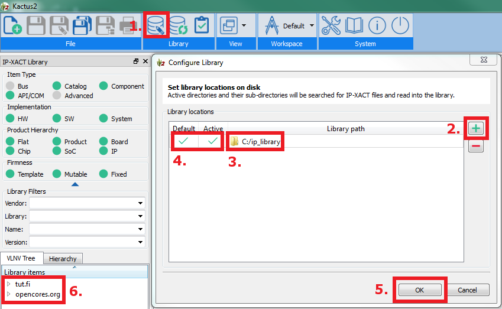

Configuring Library (Step 1/2)
Kactus2 library settings determine, which folder is scanned for components and other IP-XACT documents.
- Click the configure library icon on the top ribbon.
- Click the plus button.
- Select the root folder of the documents as the library path.
- Make sure it is both active and default.
- Click ok.
- If there was any readable IP-XACT documents, they will show up under Library items.
The new documents will be placed under the default location.
The existing documents are scanned from all active locations.

The next step is accessing documents.